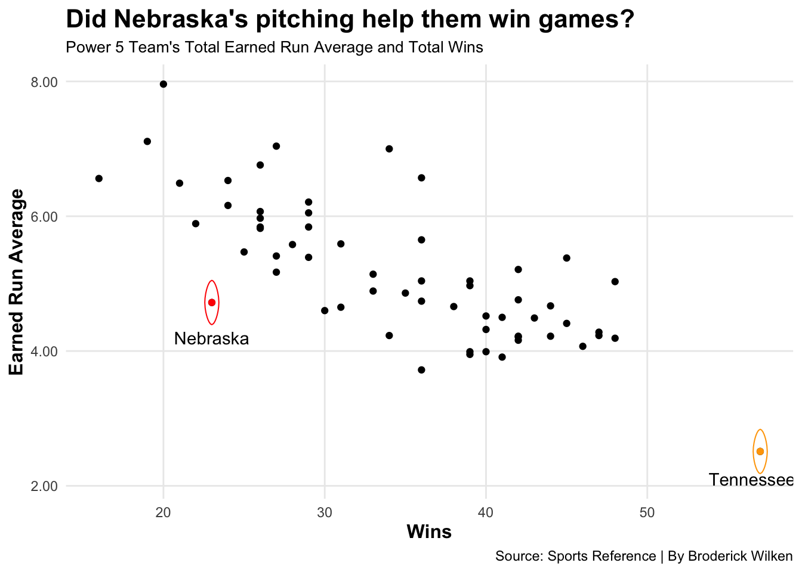
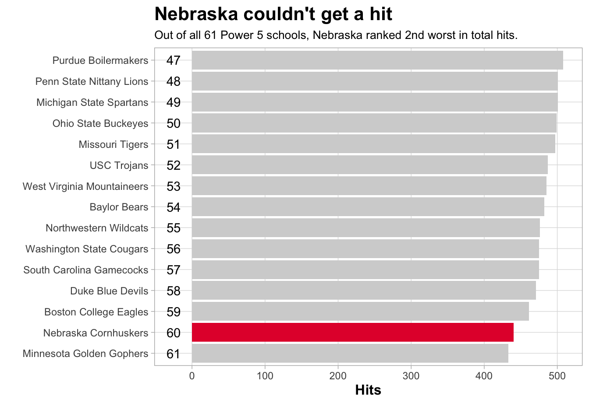
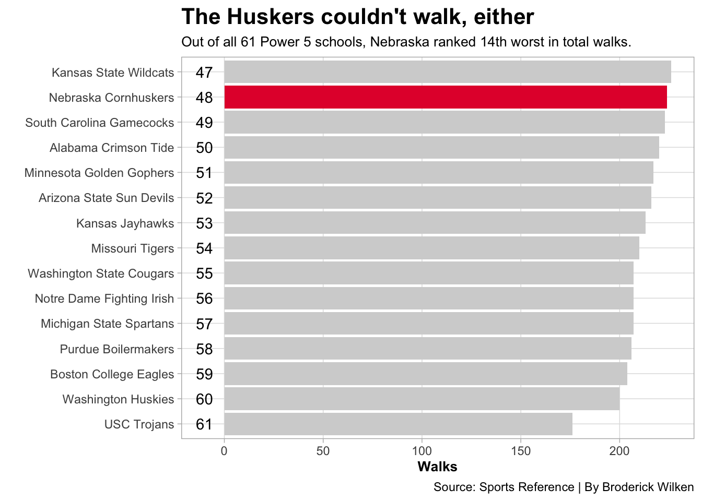

Nebraska Baseball endured a disasterous season in 2022
baseball
college
nebraska
Big Ten
Big 10
Author
Broderick Wilken
Published
April 16, 2023
In 2021, Nebraska Baseball won the Big Ten Championship for the first time since 2017. It was their second Big Ten title since joining the conference in 2012. With their recent hiring of head coach Will Bolt in 2020, Nebraska had hoped to continue its success in the Big Ten and beyond for years to come. However, the 2022 season had other plans. Despite finishing 34-14 in 2021, the Huskers slumped to a 23-30 record in 2022.
With the 2023 season of college baseball over half-way through, Nebraska is looking like they’ll have another successful baseball season. This, however, begs a question: What went wrong in 2022?
Following Nebraska’s 2021 Big Ten Championship season, the team lost key pitching talent. Spencer Schwellenbach, Nebraska’s elite two-way closer, had just gotten drafted to the Atlanta Braves in the 2nd round of the MLB draft. Cade Povich, the Husker’s go-to starting pitcher, was also drafted to the Minnesota Twins in the 3rd round. Many may have looked towards pitching when searching for problems on the roster, however the stats show otherwise.
Code
library(tidyverse)library(ggalt)library(cowplot)library(gt)bsbbatting <-read_csv("NCAA_2022_Batting - Sheet1.csv")bsbpitching <-read_csv("NCAA_2022_Pitching - Sheet1.csv")bsbba <- bsbbatting %>%select(Team, Conference, H, BB) %>%arrange((H))nu <- bsbba %>%filter(Team =="Nebraska Cornhuskers") %>%arrange((H))Bottom15H <- bsbba %>%filter(H <509)Bottom15BB <- bsbba %>%filter(BB <227)TeamWins <- bsbpitching %>%select(Tm, Conference, Wins, ERA)nup <- TeamWins %>%filter(Tm =="Nebraska Cornhuskers") %>%arrange((ERA))tenn <- TeamWins %>%filter(Tm =="Tennessee Volunteers") %>%arrange((ERA))ggplot() +geom_point(data = TeamWins, aes(x = Wins, y = ERA)) +geom_point(data=nup, aes(x= Wins, y= ERA), color="red") +geom_point(data=tenn, aes(x= Wins, y= ERA), color="orange") +geom_encircle(data = nup, aes(x = Wins, y = ERA), s_shape =0, expand =-0.151, color ="red") +geom_encircle(data = tenn, aes(x = Wins, y = ERA), s_shape =0, expand =-0.151, color ="orange") +geom_text(aes(x =23, y =4.2, label ="Nebraska")) +geom_text(aes(x =56.5, y =2.1, label ="Tennessee")) +scale_y_continuous(labels = scales::label_number(accuracy = .01)) +labs(y ="Earned Run Average", x ="Wins",title ="Did Nebraska's pitching help them win games?",subtitle ="Power 5 Team's Total Earned Run Average and Total Wins",caption="Source: Sports Reference | By Broderick Wilken") +theme_minimal() +theme(plot.title =element_text(size =16, face ="bold"),plot.subtitle =element_text(size =10),axis.title =element_text(size =12, face ="bold"),panel.grid.minor =element_blank() )

Code
ggsave("image.png")
The Huskers had a combined team earned run average (ERA) of 4.72, the third lowest in the Big Ten. Despite a solid pitching season, the team still only won 23 games, and they stick out like a sore thumb on this graph. All Power 5 teams with an ERA as low as Nebraska’s won at least 30 games. Clearly something else went wrong with this team.
Losing key pitching talent didn’t harm Nebraska nearly as much as their best hitters. Spencer Schwellenbach, Jaxon Hallmark, Luke Roskam, and Joe Aker left the team after 2021, and their absence was prominent. While Big Ten freshman of the year Max Anderson returned for the 2022 season, one player doesn’t make a nine-batter lineup. It doesn’t take too much statistical scanning to discover that Nebraska’s batting in 2022 was awful. In fact, they were one of the worst statistical hitting teams in all of Power 5 college baseball.
Code
hit1 <-ggplot() +geom_bar(data = Bottom15H, aes(x =reorder(Team, H), weight = H), fill="light grey") +geom_bar(data = nu, aes(x =reorder(Team, H), weight = H), fill="#E41C38") +coord_flip() +geom_text(aes(x =1, y =-25, label ="61")) +geom_text(aes(x =2, y =-25, label ="60")) +geom_text(aes(x =3, y =-25, label ="59")) +geom_text(aes(x =4, y =-25, label ="58")) +geom_text(aes(x =5, y =-25, label ="57")) +geom_text(aes(x =6, y =-25, label ="56")) +geom_text(aes(x =7, y =-25, label ="55")) +geom_text(aes(x =8, y =-25, label ="54")) +geom_text(aes(x =9, y =-25, label ="53")) +geom_text(aes(x =10, y =-25, label ="52")) +geom_text(aes(x =11, y =-25, label ="51")) +geom_text(aes(x =12, y =-25, label ="50")) +geom_text(aes(x =13, y =-25, label ="49")) +geom_text(aes(x =14, y =-25, label ="48")) +geom_text(aes(x =15, y =-25, label ="47")) +labs(title ="Nebraska couldn't get a hit",subtitle ="Out of all 61 Power 5 schools, Nebraska ranked 2nd worst in total hits.",x ="", y ="Hits", caption ="") +theme_light() +theme(legend.position ="none",plot.title =element_text(size =16, face ="bold"),axis.title =element_text(size =12, face ="bold"),plot.subtitle =element_text(size =10),panel.grid.minor =element_blank() )plot_grid(hit1)

Nebraska finished the season with 440 total hits. The Husker’s combined team batting average was also staggeringly low at .252, the second lowest in all of Power 5 college baseball. It’s clear that Nebraska was struggling to hit the ball. As a result, they didn’t get a lot of walks, either.
Code
walk2 <-ggplot() +geom_bar(data = Bottom15BB, aes(x =reorder(Team, BB), weight = BB), fill="light grey") +geom_bar(data = nu, aes(x =reorder(Team, BB), weight = BB), fill="#E41C38") +coord_flip() +geom_text(aes(x =1, y =-10, label ="61")) +geom_text(aes(x =2, y =-10, label ="60")) +geom_text(aes(x =3, y =-10, label ="59")) +geom_text(aes(x =4, y =-10, label ="58")) +geom_text(aes(x =5, y =-10, label ="57")) +geom_text(aes(x =6, y =-10, label ="56")) +geom_text(aes(x =7, y =-10, label ="55")) +geom_text(aes(x =8, y =-10, label ="54")) +geom_text(aes(x =9, y =-10, label ="53")) +geom_text(aes(x =10, y =-10, label ="52")) +geom_text(aes(x =11, y =-10, label ="51")) +geom_text(aes(x =12, y =-10, label ="50")) +geom_text(aes(x =13, y =-10, label ="49")) +geom_text(aes(x =14, y =-10, label ="48")) +geom_text(aes(x =15, y =-10, label ="47")) +labs(title ="The Huskers couldn't walk, either",subtitle ="Out of all 61 Power 5 schools, Nebraska ranked 14th worst in total walks.",x ="", y ="Walks", caption ="Source: Sports Reference | By Broderick Wilken") +theme_light() +theme(legend.position ="none",plot.title =element_text(size =16, face ="bold"),axis.title =element_text(size =10, face ="bold"),plot.subtitle =element_text(size =10),panel.grid.minor =element_blank() )plot_grid(walk2)

The Huskers had 224 total walks in 2022. Failing to get on base leads to fewer at-bats and fewer opportunities to score runs. While Nebraska’s pitching was pretty solid, you can’t win games when you can’t score. You also can’t score when you can’t even put the baseball in play. The Huskers struck out in 2022, a LOT.
Code
StrikeoutPCT <- bsbbatting %>%filter(Conference =="Big Ten") %>%mutate(SOPCT = SO / AB,CALCSOPCT = SOPCT *100) %>%select(Team, CALCSOPCT, SO, AB) %>%arrange(desc(CALCSOPCT))options(digits=3)StrikeoutPCT %>%gt() %>%cols_label(CALCSOPCT ="Strikeout Percentage",SO ="Strikeouts" ) %>%tab_header(title ="When Nebraska swung, they definitley missed",subtitle ="The Huskers struck out on 26% of their at-bats, the 2nd highest in the Big Ten." ) %>%tab_style(style =cell_text(color ="black", weight ="bold", align ="left"),locations =cells_title("title") ) %>%tab_style(style =cell_text(color ="black", align ="left"),locations =cells_title("subtitle") ) %>%tab_source_note(source_note =md("**By:** Broderick Wilken | **Source:** Sports Reference") ) %>%tab_style(locations =cells_column_labels(columns =everything()),style =list(cell_borders(sides ="bottom", weight =px(3)),cell_text(weight ="bold", size=12) ) ) %>%opt_row_striping() %>%opt_table_lines("none") %>%tab_style(style =list(cell_fill(color ="red"),cell_text(color ="black") ),locations =cells_body(rows = Team =="Nebraska Cornhuskers"))
When Nebraska swung, they definitley missed
The Huskers struck out on 26% of their at-bats, the 2nd highest in the Big Ten.
Team
Strikeout Percentage
Strikeouts
AB
Iowa Hawkeyes
27.1
514
1897
Nebraska Cornhuskers
26.6
464
1746
Michigan Wolverines
26.0
565
2170
Indiana Hoosiers
25.1
513
2047
Minnesota Golden Gophers
24.5
423
1726
Northwestern Wildcats
24.2
416
1722
Penn State Nittany Lions
23.3
441
1891
Maryland Terrapins
23.3
515
2215
Michigan State Spartans
22.6
419
1850
Ohio State Buckeyes
22.3
393
1761
Purdue Boilermakers
22.0
386
1756
Illinois Fighting Illini
20.6
388
1880
Rutgers Scarlet Knights
19.6
428
2189
By: Broderick Wilken | Source: Sports Reference
Nebraska’s 26% strikeout percentage was the 2nd highest in the Big Ten and the 9th highest in all of Power 5 College Baseball. Their young and inexperienced batting lineup couldn’t get anything going all season long.
There’s no doubt that the Husker’s inability to hit was the reason for their significant fall from baseball grace in 2022. Nebraska’s talent loss from the previous season was a punch in the gut. Their atrocious performance on the plate led to a disappointing season after just winning a Big Ten Title. Will the Huskers bounce back in 2023? So far, so good.